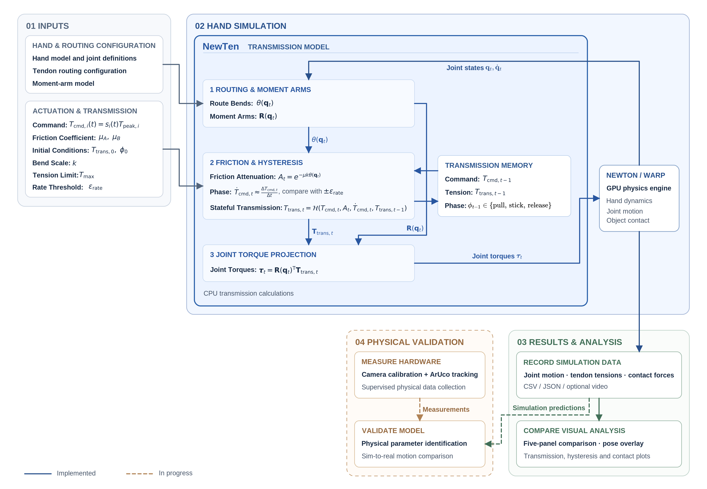
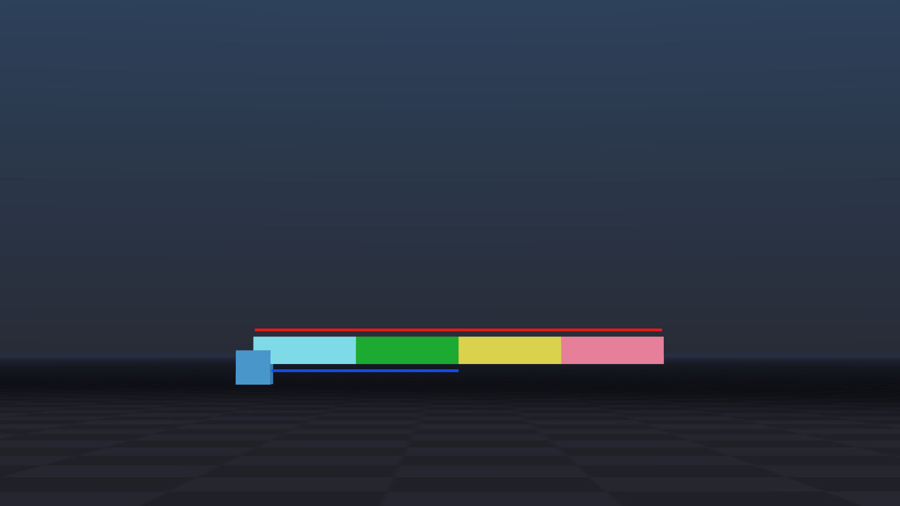
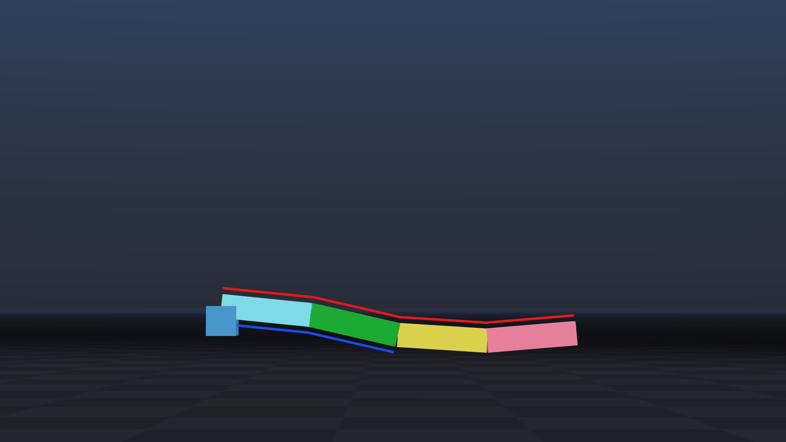
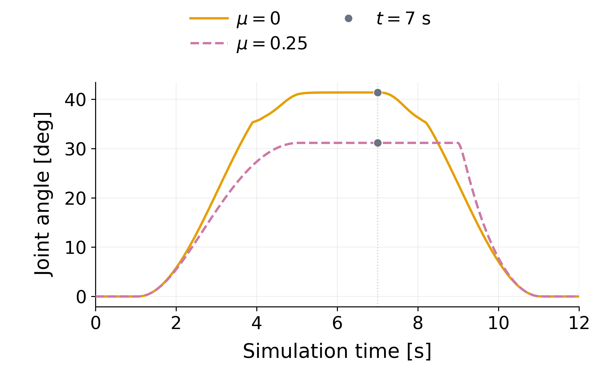
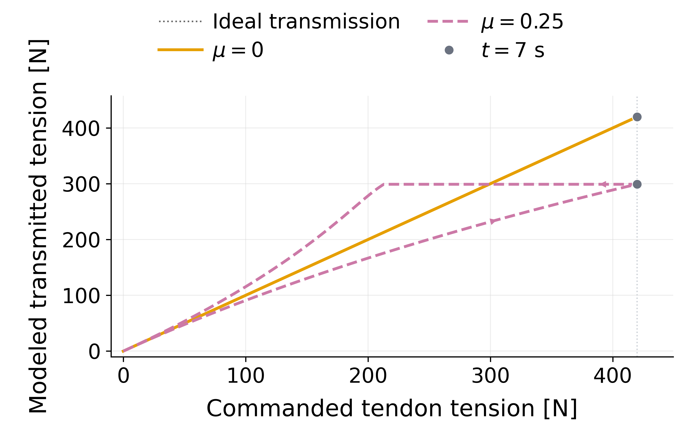

01 / System
System Overview
Route geometry and loading history determine modeled tendon tension; moment arms map that tension into joint torques. The demonstrated pipeline computes transmission on the CPU and couples it to GPU-accelerated Newton/Warp hand dynamics.

Implemented components
- Stateful transmission: route-dependent tension attenuation with pull, stick, and release memory.
- Newton coupling: moment-arm projection from transmitted tension to joint torque.
- Synchronized evaluation: matched-command simulations with linked pose, joint-motion, and tension records.
02 / Motivation
Research Motivation
Simplified command-to-torque mappings can omit tension losses along a tendon route and differences between loading and release. NewTen makes these effects explicit so their influence on simulated motion can be studied. The longer-term question is whether identified transmission models improve predictions of a physical hand.
03 / Design
System Design
A generic four-link mechanism isolates the effect of tendon extent. Its full-length route spans all four links; the partial route primarily actuates the proximal joints. The ORCA experiment uses separate, estimated hand routes.
Full and partial routes


Combined bending response


Model details
Transmission memory retains prior command, tension, and pull, stick, or release phase. Route bends set attenuation; loading history affects transmitted tension. Moment arms project that tension into joint torque. The displayed ORCA comparison uses constant estimated moment arms.
04 / Method
Methodology
One command schedule drives each comparison through the same five stages.
-
Configure
Set the mechanism, tendon routes, moment arms, and transmission parameters.
-
Update transmission
Use the command and retained loading state to compute transmitted tension.
-
Project torque
Map tendon tensions into joint torques through the moment arms.
-
Advance and record
Integrate Newton dynamics and save joint motion and tendon-tension records.
-
Compare
Inspect matched friction cases at shared saved timestamps.
05 / Experiments
Experimental Setup
The ORCA comparison changes tendon-transmission friction while preserving the six-tendon command schedule, hand geometry, and fixed-ball scene.
| Condition | Recorded setting |
|---|---|
| Tendon-friction cases | μ = 0 and μ = 0.25; identical actuator commands |
| Timing | 0–12 s; 0.002-s control step; 12 Newton integration substeps per control step |
| Command phases | Open 0–1 s; load 1–5 s; hold 5–7 s; unload 7–11 s; settle 11–12 s |
| Saved outputs | 6,001 samples per case; index PIP angle and commanded/transmitted index-flexor tension |
Experiment provenance and limitations
The video and plots share replay 101326_013929_poster_asset_replay of reference experiment 101126_211648_camera_b_60_20. All panels select a common saved timestamp. Original time, command, and transmission records match the replay; original full joint trajectories were unavailable, so complete joint-by-joint identity to that earlier execution cannot be verified.
06 / Results
Evaluation & Results
Under identical commands, changing modeled tendon friction changes index PIP motion and produces transmission hysteresis.
Index PIP Joint Motion


Index-Flexor Loading and Release


Selected Results from the CMU Poster
| Observation | μ = 0 | μ = 0.25 | Poster finding |
|---|---|---|---|
| Index PIP angle [deg] | 41.37 | 31.15 | 10.22° less flexion |
| Modeled transmitted tension [N] | 420.00 | 299.04 | 28.8% lower modeled tension |
| Loading / release | Ideal transmission | Distinct branches | Model-generated hysteresis |
Compiled from the NewTen poster, “Results: Quantitative Comparison”: two numeric rows reproduce its table and reported differences; the response row summarizes the adjacent plot. The comparison uses constant estimated moment arms and uncalibrated transmission parameters.
07 / Discussion
Discussion & Limitations
Current evidence
NewTen implements stateful tendon transmission coupled to Newton dynamics. Matched-command ORCA simulations demonstrate hysteresis and friction-dependent joint motion. The poster reports simulation findings, not numerical implementation-error metrics or physical measurements; these differences do not establish improved hardware prediction.
Next validation
Physical route geometry and friction parameters still require identification. The next comparison will calibrate NewTen and a frictionless baseline independently on the same dataset, freeze their parameters, and evaluate held-out motion predictions and computational overhead.
08 / Resources
Resources & Project Status
NewTen remains an ongoing research project. The presented poster documents simulation findings, rather than a peer-reviewed publication.
- NewTen research poster — 29th Undergraduate Research Symposium, Boston University, Boston, MA, 2026. Presented. Authors: Jungjae Lee, Uksang Yoo, Jean Oh, and Jeffrey Ichnowski.
- CMU research experience — project context and research role.
- ORCA simulation demonstration — matched-command replay, μ = 0/0.25.
- ORCA hand model — external robot-description platform.
- Newton — external physics engine.
- NVIDIA Warp — compute framework used by Newton.
Figures and simulations: NewTen project materials. ORCA, Newton, and Warp are external platforms; their links are not a NewTen code release.